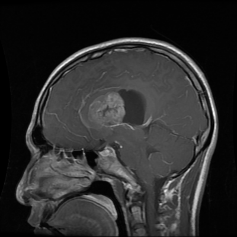
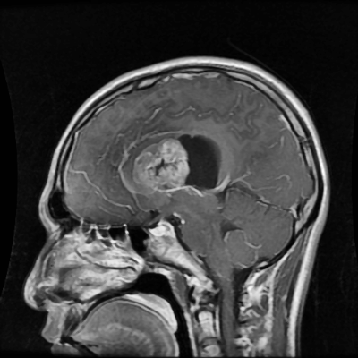
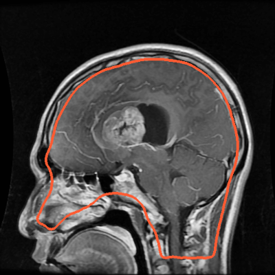
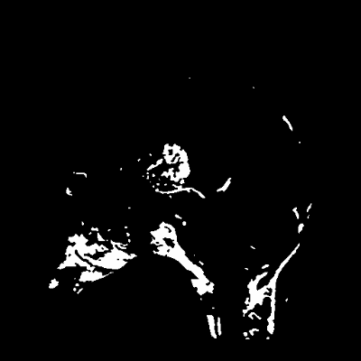
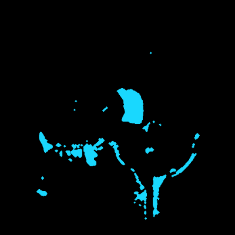
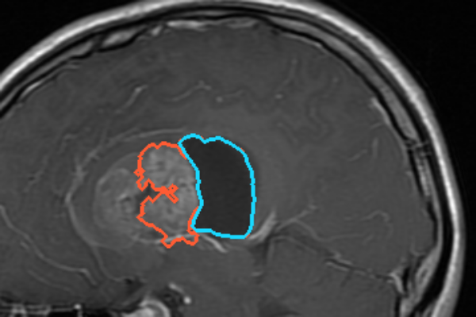

It finds the tumor’s bright, solid part and its dark, fluid-filled part, outlines both and suggests the type, using classic image processing only: no AI, no training.
What it uses
Python, NumPy, SciPy
scikit-image filters
Brightness thresholds (Otsu)
Shape rules and measurements
How it avoids AI
No training data, no model
Every decision is a written rule
Same scan in, same answer out
Every step can be shown
Finding the fluid
Fluid is dark, like background
So dark areas are checked too
Must be round, thick, inside
Mirrored pairs are normal
The steps
1 Load
Read the scan

2 Denoise
Median filter

3 Enhance
CLAHE contrast

4 Remove skull
Threshold + erosion

5 Bright areas
Otsu thresholds

6 Fluid areas
New: dark, round, one-sided

7 Pick the tumor
Solid part + fluid
Glioma
Meningioma
Pituitary
8 Suggest type
Rules on place and look
Picture 7: orange = solid tumor, cyan = fluid inside it. Test patient 2935; 98% of the cyan is inside the doctor’s outline.